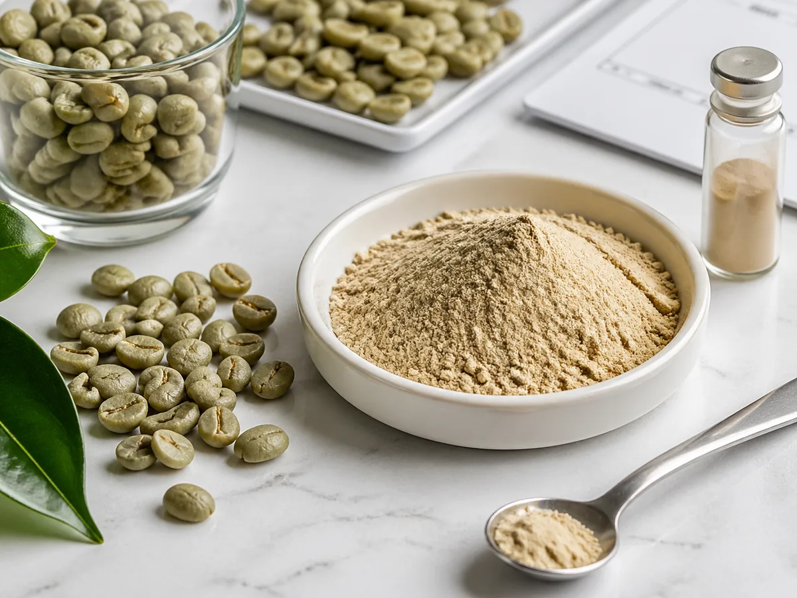
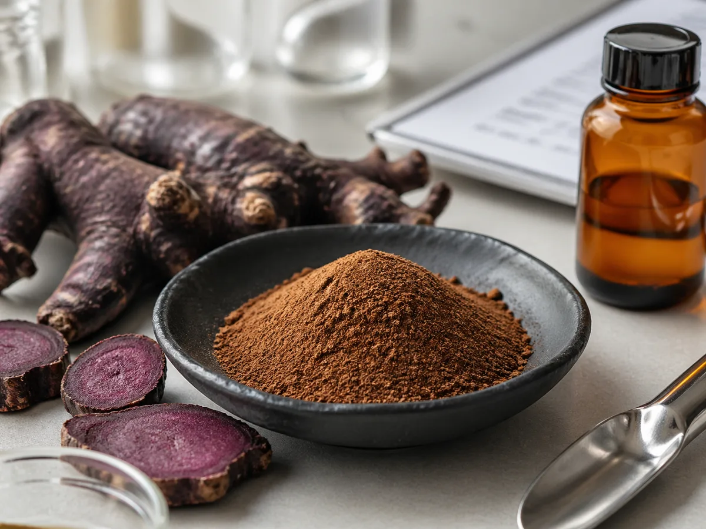
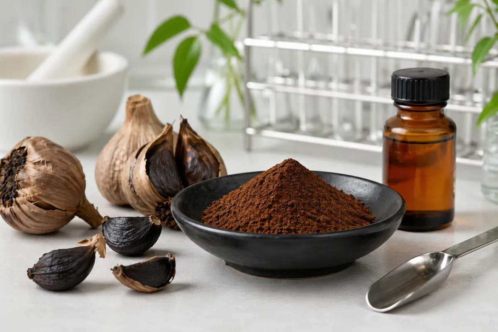
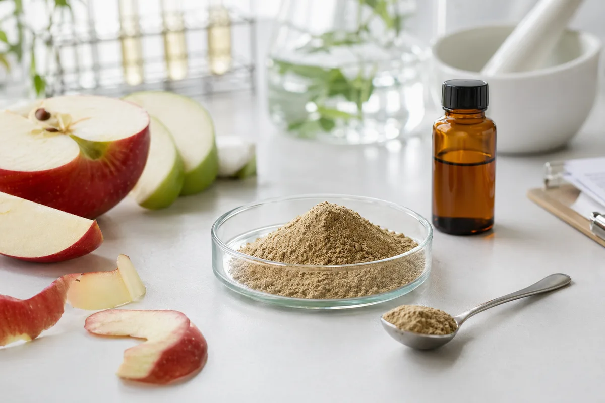
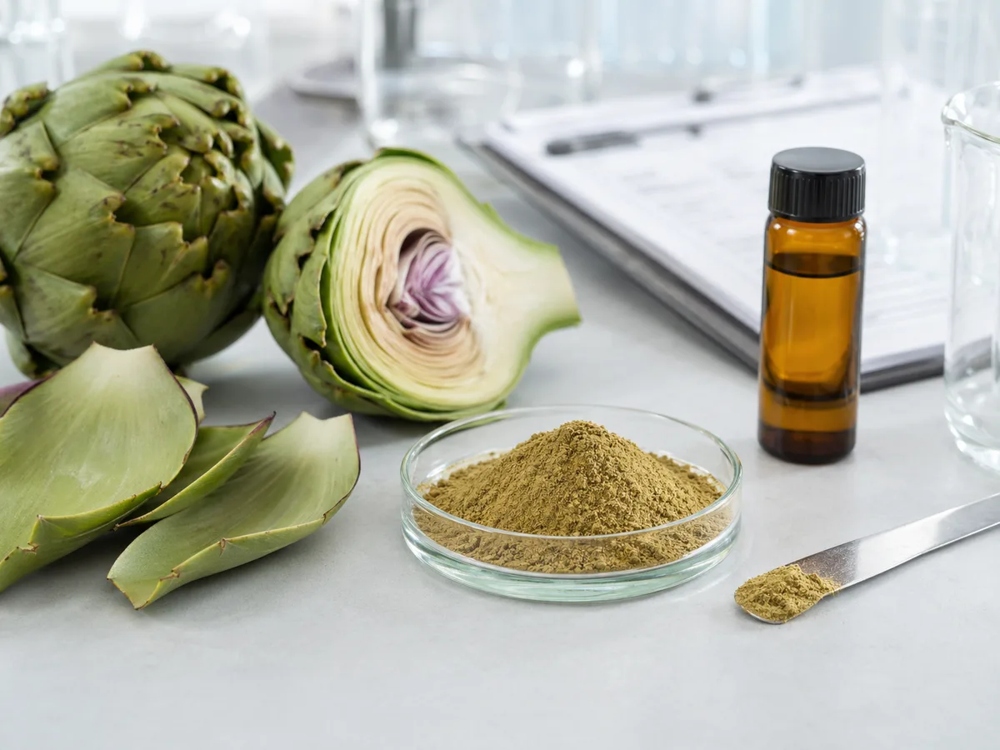

The site is built for professional sourcing workflows, not consumer retail checkout.
Essence Source
Botanical Ingredients and Extract Supply for U.S. B2B Buyers
Source botanical extracts, nutraceutical ingredients, cosmetic ingredients, and fruit & vegetable powders through a U.S.-market front end with U.S. warehouse support, documentation-ready workflows, and production-backed supply.
- US Warehousing Support
- Documentation-Ready Supply
- Production Support
- B2B Inquiry Workflow

Quick buyer summary
Essence Source helps U.S. B2B teams source botanical ingredients with document-ready inquiry support.
Essence Source serves supplement, functional food, beverage, and personal-care buyers who need botanical extracts, nutraceutical ingredients, COA/TDS review, sample routing, RFQ preparation, and U.S.-market communication before a purchase order can move forward.
Buyers can compare product categories, specifications, application fit, and stock-path signals.
The inquiry flow routes pricing, sample, and document requests with product-specific context.
What we supply
Built for inquiry-driven sourcing, not retail checkout.
Botanical Extracts
Standardized plant extracts organized for U.S. B2B product screening and RFQ flow.
Nutraceutical Ingredients
Commercially relevant supplement ingredients with document-aware product pages.
Cosmetic Ingredients
Selected botanical ingredient options for personal-care sourcing conversations.
Fruit & Vegetable Powders
Powders for beverage and food formulation teams comparing origin, format, and support.
Explore By Collection
Start with the product collection that matches your buying intent.
To support rapid evaluation, our high-purity botanical and nutraceutical ingredients are structured into dedicated commercial collections, enabling procurement officers, formulators, and brand managers to transition seamlessly from scientific research to RFQ.
Brand Ingredients
Five hero ingredients with clearer markers, stronger positioning, and fast inquiry flow.
Browse Brand IngredientsSpecialty Ingredients
Premium and specialty botanical ingredients for brands targeting stronger differentiation in the U.S. market.
Browse Specialty IngredientsSpecification Extracts
Practical 4:1 and standardized extracts for capsules, powders, teas, and classic wellness programs.
Browse Specification ExtractsNatural Mushrooms
Functional mushroom extracts for immune-support, wellness, and modern supplement positioning.
Browse Natural MushroomsPriority Ingredients
Start with the pages Google should crawl first.
These ingredient pages represent the clearest buying intent, strongest U.S. sourcing value, and highest-priority indexing paths for supplement and functional food teams.
Green Coffee Bean ExtractChlorogenic acid grades for supplement and beverage programs
Black Ginger Extract5,7-dimethoxyflavone positioning for premium formulas
Artichoke ExtractCynarin grades with clear COA and RFQ pathways
FisetinHigh-purity fisetin for healthy-aging product teams
Reishi Mushroom ExtractFunctional mushroom extract with polysaccharide specification
Sourcing search paths
Pages built around how buyers actually search.
These sourcing pages connect broad Google searches to the right product category, quality document path, and RFQ workflow.
Botanical Extract Supplier USAFor buyers comparing botanical extract suppliers, COA/TDS paths, samples, and U.S. support
Botanical Ingredient SupplierFor broad botanical ingredient supplier searches across extracts, powders, and mushroom materials
Nutraceutical Ingredient SupplierSupplement-focused ingredient sourcing path
Bulk Botanical ExtractsWholesale botanical ingredient supplier path for bulk RFQs, MOQ, and repeat order planning
Custom Extract ManufacturingCustom specification and production review path
Latest technical notes
Specification guides for active ingredient buyers.
Use these notes when comparing marker levels, COA/TDS paths, sample relevance, and application fit before sending an RFQ.
Green Coffee Chlorogenic Acid GradesCompare 10%-60% chlorogenic acid specs, caffeine expectations, and beverage fit
Black Ginger 5,7-Dimethoxyflavone GradesReview Kaempferia parviflora identity, HPLC method language, and marker grades
Artichoke Cynarin and Chlorogenic Acid SpecsClarify cynarin 2.5%-5%, chlorogenic acid options, and document path
Black Garlic SAC Specification NotesCompare aged black garlic identity, SAC grade language, and sensory fit
Apple Polyphenol 70% Specification NotesReview apple-derived identity, polyphenol assay language, solubility, and RFQ risks
Buyer resource paths
Use these trust and sourcing pages before supplier selection.
Google Search Console is already surfacing supplier, wholesale, and technical document searches. These pages help buyers move from broad discovery to a document-ready sourcing conversation and give crawlers clearer paths into the quality, warehouse, resource, and insight sections.
Quality & COA/TDS PathReview how document requests, sample review, and testing questions are handled
US Warehouse SupportUnderstand sample, stock-path, and commercial shipment review
RFQ & COA/TDS ResourcesUse copy-ready templates for quote, sample, and document requests
Market & Technical InsightsRead buyer guides, market notes, and technical notes for supplier comparison
Buyer GuidesIngredient and supplier selection guides for procurement teams
Technical NotesSpecification, assay, stability, and application notes for QA review
Buyer qualification
What U.S. buyers should verify before choosing botanical extract suppliers.
A useful supplier comparison should go beyond product names. Review botanical identity, plant part, active marker or ratio, available COA/TDS, sample timing, MOQ, lead time, packing, and whether the supplier can support a repeatable commercial path.
Ask for product-specific documents before sample or quote approval.
Clarify whether the request is a sample, pilot, first PO, or repeat-volume order.
Confirm whether U.S.-side sample or stock-path support applies to the product.
Why buyers trust us
US warehousing, documentation-ready supply, production-backed coordination.
Buyers usually need the same first answers: what the ingredient is, which applications it fits, which documents can be reviewed, and how the U.S. commercial path works.
Brand ingredients
Five featured brand ingredients for differentiated U.S. B2B programs.
These five programs surface the brand ingredients most useful for first-pass buyer screening: branded positioning, key markers, application fit, and a direct path to inquiry.

SoluxBean
Green Coffee Bean Extract
Two green coffee bean extract options for B2B programs: chlorogenic acids 50% decaffeinated and chlorogenic acids 35% water-soluble.
Applications
- Dietary Supplements
- Functional Beverages
- Personal Care

GL NoirFlav
Black Ginger Extract
Black ginger extract standardized to 5,7-dimethoxyflavone with three commercial grades for differentiated nutraceutical positioning.
Applications
- Dietary Supplements
- Functional Foods
- Personal Care

NiorGar
Black Garlic Extract
Aged black garlic extract built around S-allyl cysteine content for supplement, functional food, and blend applications.
Applications
- Dietary Supplements
- Functional Foods
- Powder Blends

Purapple
Apple Polyphenol Extract
Apple polyphenol extract standardized to high total polyphenols for beverage, supplement, and food formulation teams.
Applications
- Dietary Supplements
- Functional Beverages
- Food Formulations

Royal CynarArt
Artichoke Extract
Artichoke extract program with two cynarin grades for botanical supplement and functional food sourcing.
Applications
- Dietary Supplements
- Functional Foods
- Botanical Blends
U.S. warehouse support
Make stock status legible before the sales conversation starts.
Products are tagged as US Warehouse Available, Available by Inquiry, or Made to Order so buyers can screen for speed and fit early.


Manufacturing partner
Our manufacturing partner supports the testing and supply story behind the site.
Essence Source is positioned as the U.S. commercial front end. Manufacturing depth, testing capability, and supporting documents come from the partner-supply relationship, presented carefully for B2B buyers.
Buyer Workflow
How U.S. ingredient teams typically use this site.
The site is now structured to support a realistic B2B research path: identify the right collection, compare specs, review document availability, then move into an email-based commercial conversation.
Choose a collection
Start with Brand Ingredients, Specialty Ingredients, Specification Extracts, or Natural Mushrooms.
Review spec fit
Use product pages to compare botanical name, part used, marker level, warehouse signal, and application fit.
Check documents
COA, TDS, and available testing files can be requested through the same inquiry path.
Move to action
Email the sales team with the product name for pricing, samples, or document review.
FAQ
Short answers for common buyer questions.
No. Essence Source is positioned as a B2B ingredient sourcing and inquiry website for U.S.-market buyers, not a retail storefront.
No. Pricing depends on specification, order volume, stock position, packaging, and document requirements, so the website focuses on RFQ and sample workflows instead.
Typical document paths include COA and TDS. Product pages show document availability, and additional files can be requested during the inquiry process.